Sistema Operativo IOS
Introducción
Si Android representa diversidad y apertura, iOS simboliza integración y consistencia. Apple presentó su sistema operativo en 2007 con el primer iPhone, y desde entonces ha evolucionado de ser un software sencillo para llamadas, mensajes y navegación básica, a convertirse en el centro de un ecosistema global que incluye iPads, relojes, televisores y hasta gafas de realidad mixta.
La gran diferencia de iOS es que Apple controla tanto el hardware como el software, lo que asegura fluidez, seguridad y actualizaciones inmediatas en todos los dispositivos compatibles. Cada versión ha ido puliendo esa experiencia, incorporando funciones que muchas veces marcaron el rumbo de la industria móvil.
A continuación, un repaso narrativo por la historia de iOS, sus transformaciones y las novedades que fueron conquistando a millones de usuarios.
iPhone OS 1 (2007): la revolución táctil
Con el primer iPhone, Apple mostró un sistema operativo que rompía con todo lo anterior: pantalla multitáctil, gestos intuitivos, navegador Safari, correo electrónico y reproductor de música. No había tienda de aplicaciones ni personalización, pero fue suficiente para cambiar para siempre lo que entendíamos por teléfono.
iPhone OS 2 (2008): nace la App Store
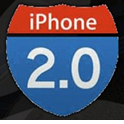El gran salto llegó con la App Store, que permitió descargar aplicaciones de terceros de forma sencilla y segura. Esta innovación no solo amplió el potencial del iPhone, sino que también creó una nueva industria: la de las apps móviles, con millones de desarrolladores y emprendedores en todo el mundo.
iPhone OS 3 (2009): consolidación
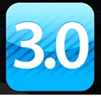Apple escuchó a los usuarios y añadió funciones básicas que se echaban en falta: copiar y pegar, MMS, búsqueda Spotlight y tethering. Fue una versión que convirtió al iPhone en un dispositivo más completo y funcional.
iOS 4 (2010): el cambio de nombre
El sistema pasó a llamarse oficialmente iOS. Introdujo la multitarea (limitada pero útil), carpetas para organizar aplicaciones y la app iBooks. También debutó FaceTime, acercando las videollamadas a un público masivo.
iOS 5 (2011): iCloud y Siri
Con iOS 5 llegó iCloud, que sincronizaba datos entre dispositivos Apple, y las notificaciones mejoradas. Pero la estrella fue Siri, el primer asistente de voz integrado en un smartphone, que marcó el inicio de la interacción por voz en móviles.
iOS 6 (2012): independencia de Google
Fue una versión polémica por el lanzamiento de Apple Maps, que sustituyó a Google Maps y generó críticas por sus errores iniciales. También introdujo Passbook (precursor de Wallet) y una mayor integración de Siri. Pese a sus tropiezos, fue un paso hacia la autonomía de Apple.
iOS 7 (2013): rediseño radical
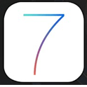Apple cambió por completo la estética con el flat design, abandonando los skeumorfismos que imitaban objetos reales. Introdujo el Centro de Control, AirDrop y multitarea mejorada. El cambio fue tan drástico que generó división, pero definió la imagen del iOS moderno.
iOS 8 (2014): más abierto a los desarrolladores
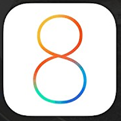Permitió extensiones, teclados de terceros y añadió HealthKit, la primera gran apuesta por la salud digital. También llegó Continuity, que permitía empezar una tarea en un dispositivo y continuarla en otro dentro del ecosistema Apple.
iOS 9 (2015): estabilidad y optimización
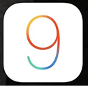Se enfocó en mejorar el rendimiento, sobre todo en dispositivos antiguos. Introdujo Split View y Picture in Picture en iPad, y un Siri más proactivo. No fue una versión espectacular en novedades, pero sí clave en eficiencia.
iOS 10 (2016): mensajes y hogar conectado
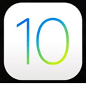La app de Mensajes se transformó con stickers y efectos. La pantalla de bloqueo y las notificaciones se volvieron más interactivas. Además, apareció la app Casa (Home), que convertía el iPhone en un centro de control para la domótica.
iOS 11 (2017): el iPad se potencia
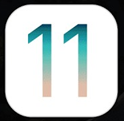Esta versión fue especialmente relevante para el iPad, con un nuevo Dock, multitarea mejorada y soporte para arrastrar y soltar. También debutó ARKit, abriendo las puertas a la realidad aumentada dentro del ecosistema Apple.
iOS 12 (2018): rendimiento y bienestar
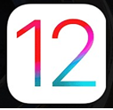Se centró en hacer que incluso los dispositivos antiguos funcionaran mejor. Introdujo Screen Time para medir y limitar el uso del móvil, notificaciones agrupadas y Siri Shortcuts. Fue una actualización muy bien recibida por su estabilidad.
iOS 13 (2019): modo oscuro y privacidad
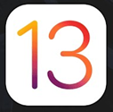Llegó el esperado modo oscuro, junto con mejoras en Fotos, Mapas y Recordatorios. Apple reforzó la privacidad con el Inicio de sesión con Apple, una alternativa segura frente a Facebook o Google.
iOS 14 (2020): widgets en la pantalla de inicio
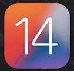Una de las actualizaciones más visibles: los widgets llegaron a la pantalla principal, junto con App Library para organizar apps automáticamente. También se reforzó la privacidad con avisos de cámara y micrófono en uso.
iOS 15 (2021): comunicación y concentración
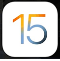Mejoró FaceTime con SharePlay, añadió el modo Concentración (Focus) para gestionar notificaciones y reforzó la privacidad con funciones como Private Relay en Safari. iOS se volvió más personal y adaptado a cada usuario.
iOS 16 (2022): personalización de la pantalla de bloqueo
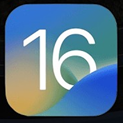Una de las actualizaciones más queridas por los usuarios, que permitió personalizar la pantalla de bloqueo con widgets, relojes y fondos dinámicos. También añadió la posibilidad de editar o borrar mensajes en iMessage y nuevas capas de seguridad.
iOS 17 (2023): más humano y social
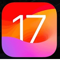Introdujo los Contact Posters, que personalizan cómo nos ven los demás en llamadas, y los videomensajes en FaceTime. También llegó la app Diario (Journal) para fomentar la escritura personal y el bienestar digital.
iOS 18 (2024): la era de la inteligencia artificial
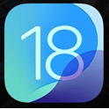La versión más reciente, iOS 18, ha sido apodada la gran actualización de la IA. Apple presentó Apple Intelligence, un conjunto de funciones basadas en inteligencia artificial que potencian aplicaciones como Mensajes, Correo y Fotos. También amplió la personalización de la interfaz y mejoró la gestión de notificaciones.
Es un punto de inflexión que marca el inicio de una etapa en la que la IA será central en la experiencia iOS.
Conclusión
Desde aquel primer iPhone en 2007 hasta la integración de inteligencia artificial en 2024, iOS ha sido sinónimo de innovación y consistencia. Cada versión no solo añadió funciones, sino que redefinió cómo interactuamos con nuestros dispositivos.
Hoy, con iOS 18, Apple mantiene su apuesta clara: un ecosistema unificado, seguro y cada vez más inteligente, donde el software se adapta a la persona, y no al revés.
🍏 Resumen de versiones de iOS
| Versión | Año | Nombre oficial | Principales novedades |
|---|---|---|---|
| 1 | 2007 | iPhone OS 1 | Multitouch, apps básicas (Safari, Mail, iPod), sin App Store. |
| 2 | 2008 | iPhone OS 2 | App Store, inicio del ecosistema de apps. |
| 3 | 2009 | iPhone OS 3 | Copiar/pegar, MMS, Spotlight, tethering. |
| 4 | 2010 | iOS 4 | Cambio de nombre a iOS, multitarea, FaceTime, carpetas. |
| 5 | 2011 | iOS 5 | iCloud, Siri, nuevo sistema de notificaciones. |
| 6 | 2012 | iOS 6 | Apple Maps, Passbook, integración con Facebook. |
| 7 | 2013 | iOS 7 | Rediseño flat, Centro de Control, AirDrop. |
| 8 | 2014 | iOS 8 | Extensiones, teclados de terceros, HealthKit, Continuity. |
| 9 | 2015 | iOS 9 | Estabilidad, Split View en iPad, Siri proactivo. |
| 10 | 2016 | iOS 10 | Renovación de Mensajes, pantalla de bloqueo interactiva, HomeKit. |
| 11 | 2017 | iOS 11 | Dock y multitarea en iPad, ARKit, mejoras en arrastrar y soltar. |
| 12 | 2018 | iOS 12 | Screen Time, notificaciones agrupadas, Shortcuts. |
| 13 | 2019 | iOS 13 | Modo oscuro, Inicio de sesión con Apple, mejoras en Fotos. |
| 14 | 2020 | iOS 14 | Widgets en pantalla de inicio, App Library, privacidad reforzada. |
| 15 | 2021 | iOS 15 | SharePlay, Modo Concentración, mejoras en FaceTime y privacidad. |
| 16 | 2022 | iOS 16 | Pantalla de bloqueo personalizable, editar/borrar mensajes. |
| 17 | 2023 | iOS 17 | Contact Posters, videomensajes FaceTime, app Diario. |
| 18 | 2024 | iOS 18 | Apple Intelligence (IA), personalización avanzada, notificaciones inteligentes. |